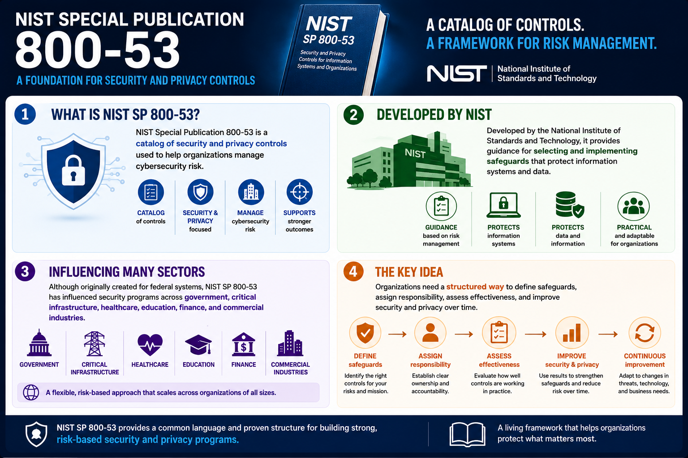

What Is NIST SP 800-53?
What Is NIST SP 800-53?
Connecting to LMS... Progress: in progress
Version 1.0 | Date: 2026-06-16 | Introductory overview of NIST SP 800-53 security and privacy controls.

Narration
NIST Special Publication 800-53 is a catalog of security and privacy controls used to help organizations manage cybersecurity risk.
Developed by the National Institute of Standards and Technology, it provides guidance for selecting and implementing safeguards that protect information systems and data.
Although originally created for federal systems, NIST SP 800-53 has influenced security programs across government, critical infrastructure, healthcare, education, finance, and commercial industries.
The key idea is that organizations need a structured way to define safeguards, assign responsibility, assess effectiveness, and improve security and privacy over time.